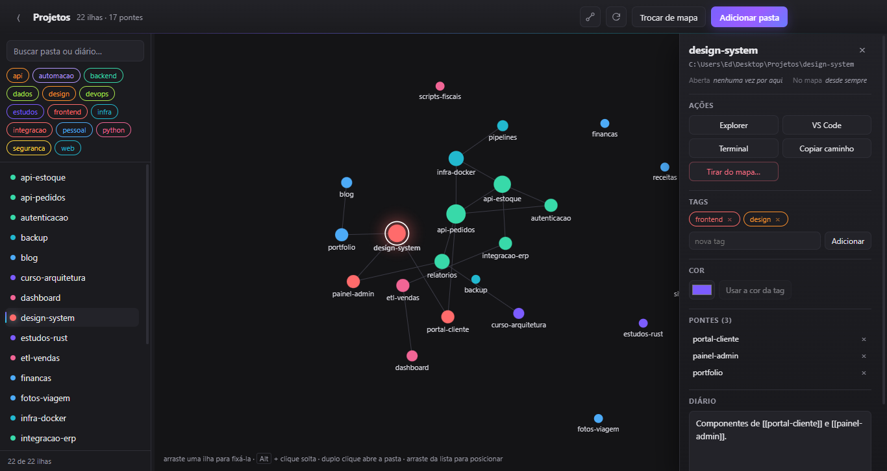

Cada pasta é uma ilha
O mapa se organiza sozinho por força-dirigida. Arraste uma ilha para fixá-la onde você quiser — a posição fica gravada e sobrevive ao fechar o app.
Um mapa navegável para as suas pastas de projeto. Cada pasta vira uma ilha, e as ligações entre elas viram pontes.

Dezenas de pastas de projeto espalhadas pela área de trabalho — porque enterrá-las em Documentos significa nunca mais achá-las. Você lembra que fez aquilo, não lembra onde nem como se chamava, e a busca do Windows não ajuda quando o que falta é o contexto: o que era, com o que se conectava, se ainda serve para alguma coisa.
O Archipel não é mais uma pasta onde guardar coisas. É uma forma de ver o que você já tem.
O mapa se organiza sozinho por força-dirigida. Arraste uma ilha para fixá-la onde você quiser — a posição fica gravada e sobrevive ao fechar o app.
Escreva [[outra-pasta]] no diário de uma delas e nasce uma ponte entre
as duas. Renomear uma pasta atualiza todas as ligações; nada quebra.
Pasta nova aparece no mapa sozinha. Pasta apagada por fora vira uma ilha “ausente” em vez de sumir com as suas anotações.
Explorer, VS Code ou terminal, direto da ilha. O app também anota quando foi a última vez que você abriu cada pasta.
Não há banco de dados nem formato proprietário. Cada pasta ganha um arquivo markdown comum, e o mapa inteiro é uma pasta que você pode copiar, versionar ou abrir em qualquer editor.
C:\Projetos\
api-pedidos\ ← a sua pasta de verdade
design-system\
.organizador\
config.yaml ← tags e cores
movimentos.log ← histórico de movimentações
pastas\
api-pedidos.md ← tags, cor, posição e diário
Como é markdown puro, dá para editar à mão no VS Code — ou deixar um agente de linha de comando reorganizar as tags e levantar as pontes para você. O app observa a pasta e redesenha o mapa conforme os arquivos são salvos.
Adicionar uma pasta ao mapa move ela de verdade no disco. É a única parte do app capaz de destruir trabalho, então é a mais conservadora: